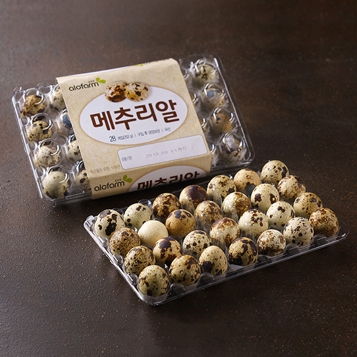

매출2할

매출2할
메추리알 사왔는데 부화한 영상 기억나네
무정란이 없어서 냉장고에 넣어야 함 ㄹㅇ
잘못된 정보다
정통추
하 이 새끼를 어쩌지
어쩌긴 패야죠

멀리서 봤을때 초콜릿인줄
피식하는 내가 싫다
깔깔깔
깰록깰록깰록
정통추
마 그게 참 메추리알한기라

메? 축알못
메추리 구어먹고싶다
")
충격적인건 울형은 저거 까기 귀찮다고 그냥 껍질체로 먹음 ;;;;; 꺼기 귀찮으면 안먹어야하지 않나??
하 씹
알하하
아재는 씨익 웃고 갑니다
메추리알 점점 먹기 힘들어짐